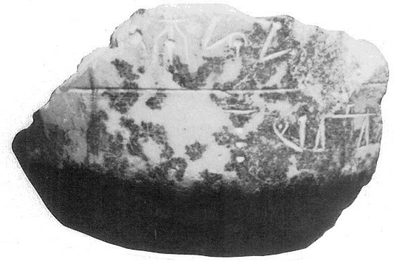
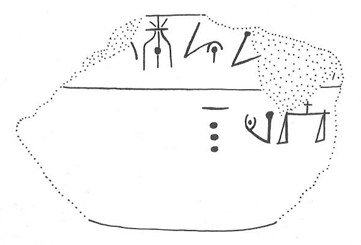

-
KNZa19
Names
KNZa19, KN Za 19
Support
Stone vessel
Location
Knossos
Findspot
Unavailable


Scribe
Unavailable
Context
Unavailable
Dimensions
Catalogue
Readings
1 1 0 KE none
1 1 0 JU none
1 1 0 MI none
1 1 1 *900 none
2 2 2 10 none
2 2 3 *118 none
3 2 3 MI none
4 2 3 NA none
𐘥𐘶𐘻𐄁
𐄐𐙈
𐘻
𐘅
KEJUMI*900
10*118
MI
NA
𐘥𐘶𐘻𐄁
𐄐𐙈𐘻𐘅
KEJUMI*900
10*118MINA
KN Za 19
(AM
1938.872) (GORILA IV:
14-15), circular Libation Table, marble, from a field north of the palace
.1: ]-KE-JU-MI[ ][•][
______________________
.2 (retrograde): ]*118-MI-NA
Palaima
1988: 313-14:
one
of the few Linear A non-administrative documents to have ruling (cf. IO
Za 11)
.2: (JGY) might this be *118 ("Talent")
 MI-NA? (cf. ZA
21a.7). If so, could MI-NA be the word for *118
? (If so, this is the 2nd occurrence of a
word following a logogram [and ZA 21a.7 a possible 3rd]; cf. FIC
KI-KI-NA on HT 88.2.)
MI-NA? (cf. ZA
21a.7). If so, could MI-NA be the word for *118
? (If so, this is the 2nd occurrence of a
word following a logogram [and ZA 21a.7 a possible 3rd]; cf. FIC
KI-KI-NA on HT 88.2.)
Commentary © John Younger
References
papers/GORILA-Vol4.pdf#page=57